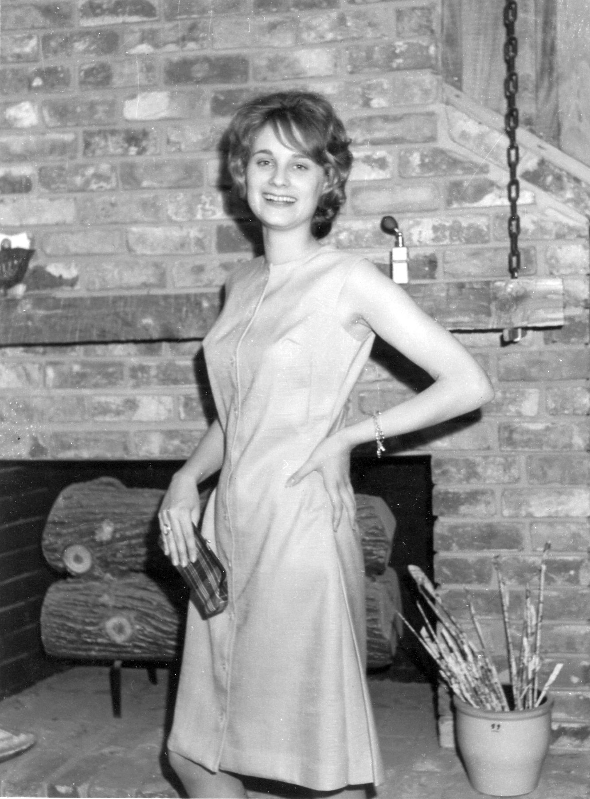

Established in 1997
|  |
Meet Nancy Rogers, also known as Bunny Rogers.
|
|
Sometimes I hold back a doll or two, hoping they might not sell because there's still a lot of
"little girl" in me. I sometimes say to people, "Buy a doll for your little girl or the little
girl in you," so I guess I have a lifelong interest in dolls.
|

|